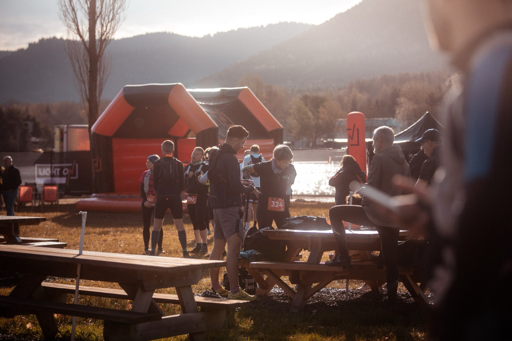
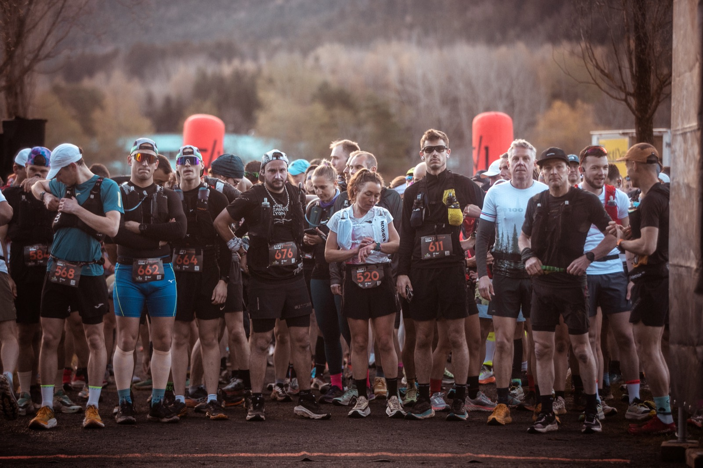
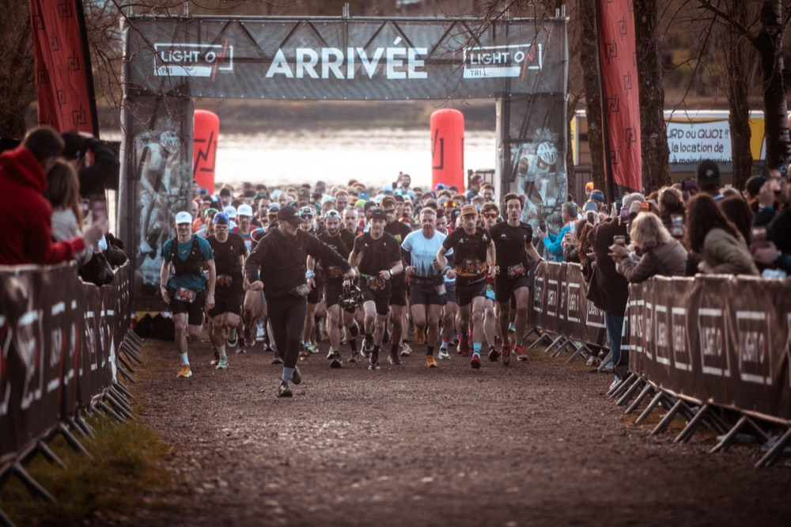
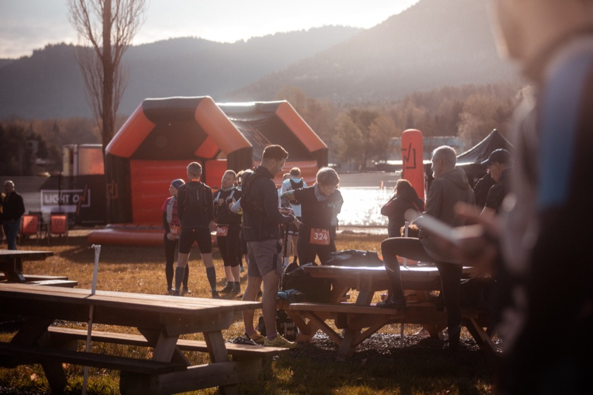
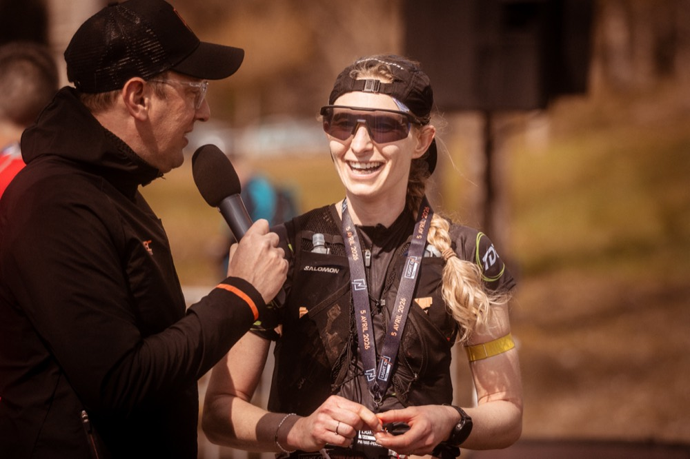
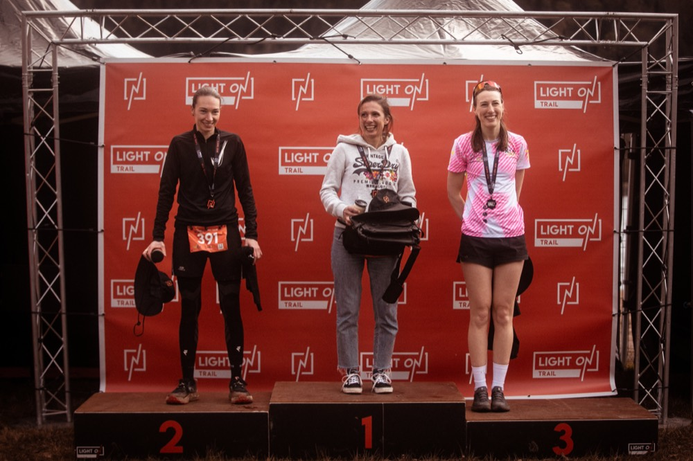
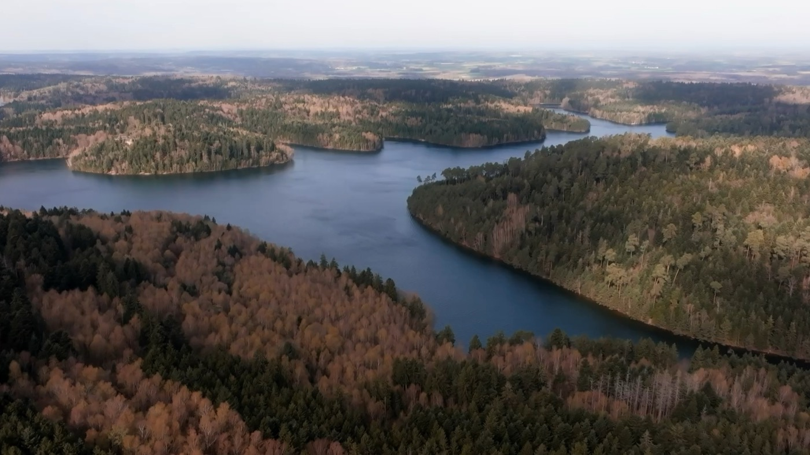
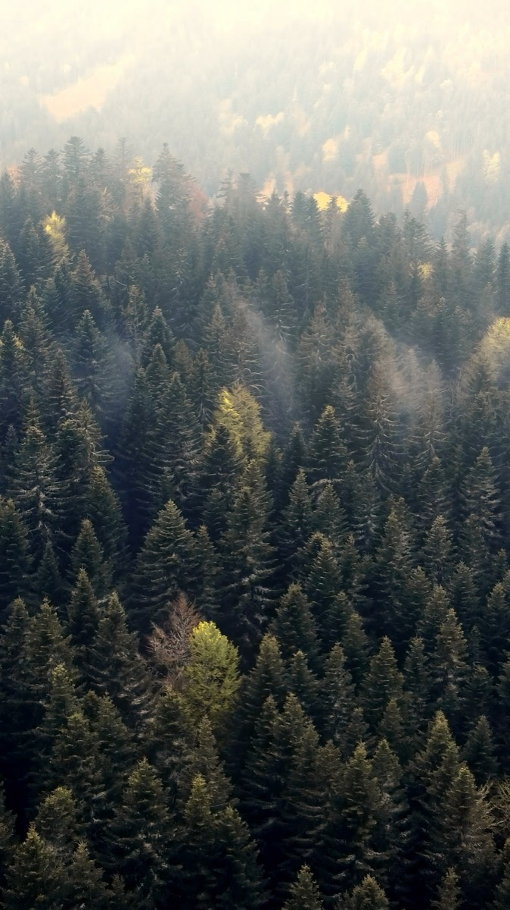

Programme & Village LIGHT ON Un week-end au bord du lac.
Le samedi pour les dossards, le dimanche pour courir, et le Village LIGHT ON au milieu de tout ça.
L'esprit LIGHT ON.
Du trail sérieux, sans se prendre au sérieux. Voilà l'idée.
Il y a une distance pour vous
Premier dossard ou habitué des sentiers : 17, 37 ou 54 KM. Et tout le monde se retrouve au même ravitaillement d'arrivée.
Le lac, la forêt, les crêtes
Forêts, crêtes et bord de lac : les parcours passent là où le massif est le plus beau. Pensez à lever la tête entre deux montées.
Tout le monde fait la course
Coureurs, bénévoles, supporters au bord du chemin. Un coureur l'a mieux résumé que nous : « Le parcours, l'ambiance, la bonne mentalité des organisateurs et des participants ! »Mickaël B., 37 KM** 2026
Le plaisir avant le chrono
On vient pour les kilomètres et la ligne d’arrivée... Mais aussi pour lever le nez et en prendre plein les yeux !
Carré, sans chichis
Balisage, ravitos, signaleurs, dossards : on prépare tout pour que vous n'ayez qu'à courir. « Très bon état d'esprit, parcours très sympathique, bénévoles très disponibles, tout était simple. »Emilie R., 17 KM* 2026
Le week-end, heure par heure.
Le samedi pour s'installer, le dimanche pour courir. Le 54 part en premier, le 17 ferme la marche.

Tout se passe au Village LIGHT ON.
Départ, arrivée, ravitaillement final, stands et buvette : tout est au même endroit, à Celles-sur-Plaine.




Stands & partenaires
Les partenaires et les acteurs du Pays des Lacs installent leurs stands au Village LIGHT ON, du retrait des dossards jusqu'aux podiums.
Restauration sur place
Buvette et restauration en produits locaux le samedi soir et le dimanche. Pour le café d'avant et le verre d'après.
Espace familles
Ouvert à tous. Les proches encouragent à l'arrivée, profitent du lac et gardent une place au soleil pour ceux qui finissent.
Remise des récompenses
Le dimanche à midi, au Village LIGHT ON : podiums, applaudissements, et on se dit à l'année prochaine.
Le Lac de Pierre-Percée.
Départ et arrivée à Celles-sur-Plaine (88110), entre Meurthe-et-Moselle et Vosges. Autour, l'un des plus grands lacs de Lorraine et des kilomètres de forêt : c'est le lac qui donne le ton des parcours.


Le lac
L'un des plus grands lacs de Lorraine, entre Vosges et Meurthe-et-Moselle. Les parcours le longent, le surplombent, et tout le monde le retrouve à l'arrivée.
La forêt vosgienne
Sapins, sous-bois, crêtes et singles : on court au cœur du massif. Pour le détail des trois tracés, direction les parcours du 17, du 37 et du 54 KM.
Venir et dormir sur place
Environ 1h de Nancy comme de Strasbourg. Accès, stationnement et hébergements autour du lac : tout est dans les infos pratiques.
Courir sans laisser de trace.
On court dans le massif de Pierre-Percée un dimanche par an. Le reste du temps, il est à ceux qui y vivent : on le laisse comme on l'a trouvé.
Zéro déchet sur les sentiers
Gobelets réutilisables aux ravitaillements et tri systématique. Le port de l'éco-cup est encouragé sur tous les parcours.
Des tracés respectueux
Sentiers existants et balisage non permanent. Tout est retiré après la course pour ne rien laisser au massif.
Ravitaillements en circuit court
Produits locaux et de saison autant que possible, pour limiter l'empreinte et soutenir les producteurs du territoire.
Mobilité partagée
Covoiturage encouragé entre coureurs pour réduire l'impact des trajets vers le lac.
Il ne manque plus que vous.
Les inscriptions sont ouvertes. Rendez-vous le 4 avril 2027.